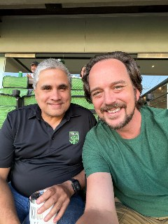

The decision gets harder as more people weigh in. The calendar fills while the important work waits. AI helps produce more, but the words sound less like you. A useful idea is spoken once and then lost. I built each of these tools to help with one of those problems.
You do not need all five. Choose the place where another week of the same pattern will cost you the most. Each tool tells you what it is for, what it asks from you, and when it is the wrong place to begin.
There is a particular kind of stuck that comes after success. Your team has an opinion. Your friends have one. The people you trust can all make a good case. The more voices you bring into the room, the harder it becomes to hear your own. The Solo Hot Seat asks you to set aside twenty-five quiet minutes, return to your body, and find what is actually true for you.
Your calendar reflects your true priorities. In a world where everything is asking for your help and demanding your attention, understanding how you are using your time, what matters most, and what brings you joy is part of learning to lead yourself well. The Time Audit turns two honest weeks into a clear picture of what deserves more of you and what may be ready to change hands.
AI can help expand what a founder is capable of doing. It can also create more work, more noise, and another place to outsource judgment. The First Hour shows you how to use AI to challenge your thinking, carry the context of your real work, and increase the good you can do without asking it to replace your wisdom.
AI is a powerful tool for expanding our reach, but too often it sounds clunky and like a computer instead of something we would write ourselves. Find Your Voice builds a standard from your own language, rhythm, edges, and choices so AI can amplify your impact without sanding your soul out of the work.
If you are a coach, founder, or wisdom worker, some of your most valuable ideas are spoken once in a real conversation and never used again. The Weekly Harvest reviews calls you already recorded, finds the wisdom inside them, and gives those words more work to do through social posts, marketing, a book, or ideas worth saving for later.

“I joined as an operator comfortable solving problems for everyone else. What I had not practiced was engineering myself with the same care I give to clients. That shift started here.”

I built every tool here to work without me. Use it, keep what helps, and leave the rest. If the same problem comes back after working through it alone, the Royals Experience is a private way to find out whether this work is more useful in a room.